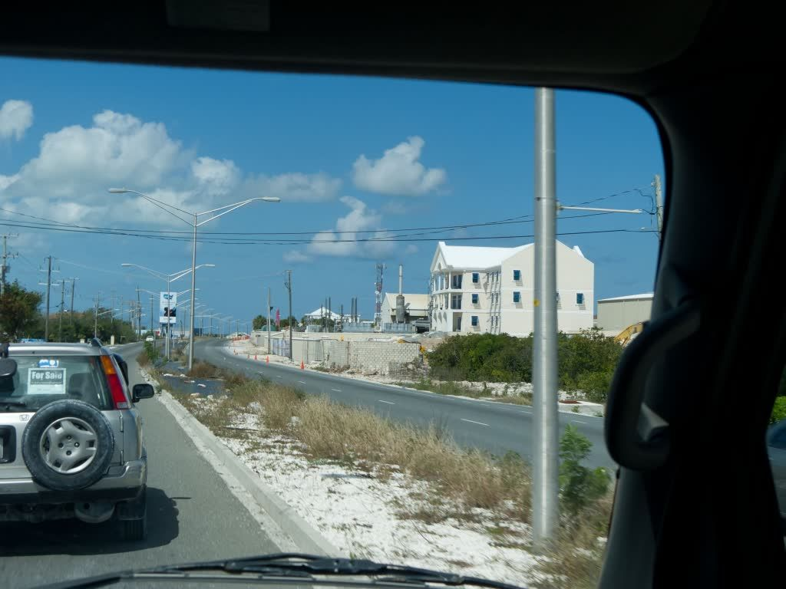

Chinson's Grill Shack
Jerk on one side, wok on the other.
Jamaican jerk and Caribbean BBQ slow-cooked for hours, a Chinese menu, and bread baked right here. On Leeward Highway, Providenciales.
Build your plateBuild your plate
The jerk and BBQ cook for hours and can sell out for the day. Come early, or order ahead.
Your main
Two sides (0 of 2)
Pick a main to start your plate.
What people say
- 5 stars
- 303
- 4 stars
- 81
- 3 stars
- 27
- 2 stars
- 9
- 1 star
- 12
“The best jerk chicken on the island.”
Kaylchip, The best restaurants in Turks and Caicos
“Chinson's may be the most well rounded of them all. The big discovery this time was the steamed grouper in parchment paper.”
Eating With Ziggy
“A local restaurant that has a full menu and servers but is also affordable.”
Visit Turks and Caicos Islands
Guests keep mentioning the conch fritters, the jerk chicken, the oxtail and the mac and cheese, and the generous portions.
Ratings and mentions from Google and Tripadvisor reviews, via Wanderlog, October 2026.
Since about 2001
Chinson's opened to cook for the island's growing Jamaican community, and the kitchen spent time testing until the jerk, the oxtail and the curry tasted the way they do back home.
“Even Jamaicans who come here say it tastes authentic.”
Allan Hutchinson, owner
It is a colourful shack with a big wooden deck, picnic tables under umbrellas, a bar at one end, and a view of Leeward Highway that is more interesting than it sounds. The bakery out back sends its bread to other kitchens on the island.

Find the shack
17 Savannah Road, off Leeward Highway
Providenciales, near the airport
- Monday–Saturday
- 8:00–9:00
- Sunday
- Call first
649 941 3533
info@chinsonsgrillshack.com